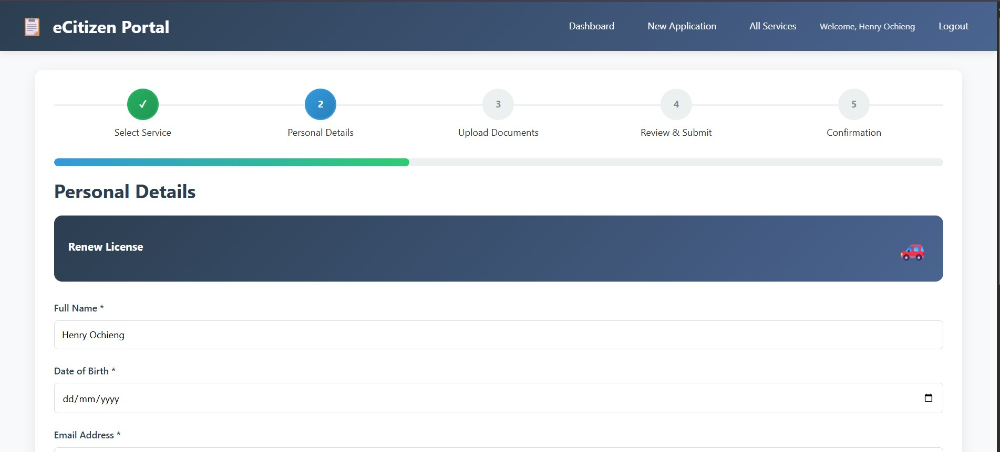
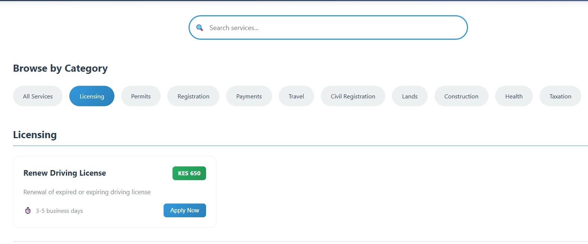
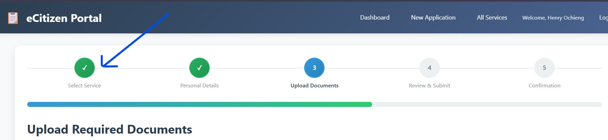
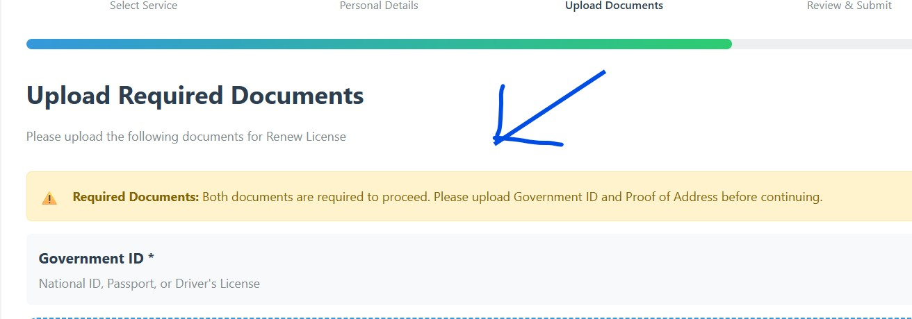

About CiviUX Solutions
Who We Are
CiviUX Solutions is a specialized user experience design agency founded in Nairobi, Kenya. We focus exclusively on designing and improving digital interfaces for government services, public sector organizations, and civic technology platforms. Our mission is to bridge the gap between citizens and digital government services through human-centered design.
What We Do
We provide comprehensive UX design services including:
- Usability evaluation and testing of existing systems
- User research and contextual inquiry
- Interface redesign and prototyping
- Accessibility compliance and WCAG 2.1 implementation
- Design system development for consistent user experiences
- Training and capacity building for government digital teams
Our Design Philosophy
Citizen-First Approach
We prioritize the needs of end-users, especially those with limited digital literacy
Inclusive Design
Creating interfaces that work for everyone, regardless of ability or background
Evidence-Based Decisions
Using data and user research to inform every design decision
Our Expert Team
Meet Our Design Specialists
Our multidisciplinary team brings together expertise in UX design, HCI research, accessibility, and technical implementation to deliver comprehensive solutions for complex civic technology challenges.
Henry Ochieng Onyango
Specializes in usability evaluation, research methodology, and project coordination. Henry ensures our projects meet both user needs and organizational requirements.
Lucky Awino Ouma
Focuses on interface design, visual systems, and user research. Lucky creates visually appealing and functional designs that enhance user satisfaction.
Lilian Peyion Kennedy
Specializes in creating interactive prototypes, user flows, and detailed design specifications. Lilian bridges the gap between design concepts and technical implementation.
Maria Achola
Ensures all our designs meet WCAG 2.1 standards and develops content strategies that make complex government information understandable to all citizens.
Daniel Thiong'o
Provides technical expertise on implementation feasibility, system architecture, and ensures our designs work within existing government technology constraints.
Our Featured Project
eCitizen Government Service Portal Redesign
A comprehensive usability evaluation and redesign project for Kenya's primary digital government service portal, aimed at improving accessibility, efficiency, and user satisfaction for millions of citizens.
PROJECT OVERVIEW
This project focuses on evaluating the usability of the eCitizen government service portal and proposing a user-centered redesign. The portal provides access to multiple government services, but many users experience difficulties due to complex navigation, unclear instructions, and inconsistent interfaces. The aim of this project is to improve usability, accessibility, and efficiency for citizens interacting with government services online.
PROBLEM DEFINITION
Although eCitizen centralizes many government services, users often struggle to complete applications successfully. The system presents long forms, technical language, and inconsistent layouts across services, which increases user errors and frustration. These usability challenges reduce trust in digital government services and discourage adoption.
TARGET USERS
The primary users of the system are Kenyan citizens with varying levels of digital literacy who access the portal using mobile phones and desktop computers. Secondary users include government officers who review and process submitted applications. The system must therefore support both novice and experienced users while remaining efficient for administrative processing.
TASK ANALYSIS
Users interact with the eCitizen portal to complete common tasks such as selecting a service, understanding requirements, filling application forms, uploading documents, submitting applications, and tracking application status. These tasks are typically performed remotely through a web browser in environments with varying internet reliability and user familiarity with online systems.
Primary User Persona: Citizen Applicant
John Mwangi
35-year-old business owner with moderate digital literacy
Goals: Quickly renew business license, understand requirements, avoid errors
Needs: Clear instructions, progress tracking, mobile compatibility
Primary Tasks:
- Find and select the correct government service
- Understand prerequisites and required documents
- Complete complex application forms accurately
- Upload documents in correct formats
- Make online payments securely
- Track application status post-submission
Detailed Task Analysis
Users interact with the eCitizen portal to complete common tasks such as selecting a service, understanding requirements, filling application forms, uploading documents, submitting applications, and tracking application status. These tasks are typically performed remotely through a web browser in environments with varying internet reliability and user familiarity with online systems.
Service Selection Phase
- Navigate through hierarchical service categories
- Read service descriptions and requirements
- Determine eligibility and prerequisites
Application Phase
- Fill personal information forms
- Complete service-specific sections
- Review information before submission
Post-Submission Phase
- Receive confirmation and reference number
- Check application status periodically
- Respond to any additional requests
Key Pain Points Identified
Through user interviews and usability testing, we identified critical issues:
- Cognitive Overload: Forms with 50+ fields displayed at once
- Inconsistent Design: Different layouts for similar services
- Poor Error Feedback: Generic messages without guidance
- Mobile Unfriendly: Tiny touch targets, poor responsiveness
- Technical Jargon: Government terminology without explanations
- Unclear Navigation: Users get lost in complex menu structures
- Document Confusion: Unclear requirements for uploads
Impact:
These issues lead to high abandonment rates, increased support calls, and low user satisfaction scores averaging 2.8/5 across services.
EXISTING SYSTEM ANALYSIS
The current eCitizen system provides centralized access to government services and reduces the need for physical visits. However, it suffers from inconsistent user interfaces, unclear navigation paths, limited feedback during errors, and poor mobile optimization. These issues significantly affect task completion and overall user satisfaction.
HCI ISSUES – IDENTIFIED PROBLEMS
The following usability issues were identified during heuristic evaluation and user testing of the existing system:
1. Cognitive Overload
Forms with 50+ fields displayed at once overwhelm users and increase error rates. Users reported feeling lost and anxious when faced with long, unstructured forms.
2. Inconsistent Design
Different layouts and interaction patterns across similar services confuse users and increase learning time. For example, the business registration form looks completely different from the passport application form, even though both require similar personal data.
3. Unclear Navigation
Complex menu structures with overlapping categories make it difficult for users to find the correct service. Many users resort to using the site search (which is also poorly implemented) or give up entirely.
4. Poor Error Feedback
Generic error messages like “An error occurred” or “Invalid input” do not help users understand what went wrong or how to fix it. This leads to repeated submission attempts and frustration.
EVALUATION CRITERIA FOR DESIGNS
The evaluation of the redesigned prototype is based on specific usability criteria that address the identified problems. Each design alternative was evaluated against these criteria:
1. Consistency
Uniform design patterns and interactions across all services to reduce cognitive load and learning time
2. Clarity
Clear navigation paths and understandable instructions to guide users through complex processes
3. Feedback
Effective system feedback during interactions and errors to inform users about system status
4. Accessibility
Support for diverse users including those with disabilities (WCAG 2.1 AA compliance)
5. Efficiency
Minimal steps and time required to complete tasks, reducing user effort and frustration
6. Error Prevention
Minimal user errors through clear guidance, validation, and helpful error messages
7. Learnability
Ease for new users to accomplish basic tasks on first encounter with the design
8. Memorability
Ease for users to re-establish proficiency after periods of non-use
DESIGN APPROACH
The project follows a user-centered design approach guided by established HCI principles. User needs, task requirements, and usability challenges identified in the problem investigation informed the design decisions. The focus was on simplifying navigation, reducing cognitive load, and providing clear step-by-step guidance throughout service applications.
THREE DESIGN ALTERNATIVES EXPLORED
We explored three distinct design alternatives to address the core usability issues identified in our research. Each was chosen to test a different hypothesis about how to best support users with varying digital literacy.
1. Form-Based Design
Evaluation Against Criteria:
- Consistency: Good - maintains familiar structure
- Efficiency: High for expert users, low for novices
- Error Prevention: Poor - all fields visible increases errors
- Learnability: Low - overwhelming for new users
Appropriate For:
Simple applications with fewer than 15 fields, users with high digital literacy, scenarios where users need to reference information from different sections simultaneously.
2. Wizard-Based Design

Evaluation Against Criteria:
- Clarity: Excellent - step-by-step guidance
- Error Prevention: High - validates each step before proceeding
- Learnability: High - breaks complex tasks into simple steps
- Efficiency: Medium - may feel slow for expert users
Appropriate For:
Complex applications with 15+ fields, first-time users, processes with clear sequential dependencies, mobile interfaces where screen space is limited.
3. Guided Assistant Design
Evaluation Against Criteria:
- Feedback: Excellent - continuous guidance
- Learnability: Excellent - explains concepts as needed
- Accessibility: Good - can adapt to user needs
- Efficiency: Low - slower due to conversational nature
Appropriate For:
Users with low digital literacy, complex services with many conditional requirements, scenarios where users need significant hand-holding, services with confusing government terminology.
FINAL SELECTION RATIONALE
Based on user feedback and evaluation against our criteria, we selected a hybrid approach combining the best elements of each alternative. Our final prototype uses a wizard-based structure with clear progress indicators for its manageability, supplemented by contextual help modules inspired by the guided assistant for complex sections. This balances the need for clear structure (from the wizard) with the flexibility to provide help (from the assistant), while maintaining a clean, consistent layout superior to the basic form-based approach.
Final Design Decisions:
Structure
Wizard-based with 5-7 logical steps per application
Navigation
Clear progress tracker with ability to jump between completed steps
Help System
Contextual help icons that expand to show explanations and examples
Error Handling
Inline validation with specific, actionable error messages
FINAL PROTOTYPE SCREENSHOTS
The final prototype addresses the HCI issues identified in the existing system. Below are key screenshots showcasing how our redesign provides clear, consistent, and user-friendly interactions.
DESIGN SOLUTIONS IN THE FINAL PROTOTYPE
Manageable Steps
Wizard-based design with 5-7 logical steps reduces cognitive load
Consistent Design System
Uniform layout and patterns across all services for predictability
Clear Navigation
Simple, intuitive menu structure with visual cues
Helpful Error Messages
Specific, actionable guidance to correct mistakes
FINAL PROTOTYPE INTERFACE

Mobile-optimized view with responsive design
Clear progress tracker showing completion status

Contextual help system with explanations
Access Our Working Prototype
We have developed a working prototype to demonstrate our redesign concepts:
Contact Us
Get In Touch With CiviUX Solutions
For inquiries about our services, collaboration opportunities, or to discuss your government digital service challenges, please contact our team.
Project Impact & Future Vision
This project demonstrates how user-centered design can transform government digital services. Our research, design alternatives, and evaluation provide a blueprint for improving not just the eCitizen portal, but digital government services across Kenya and similar contexts worldwide.